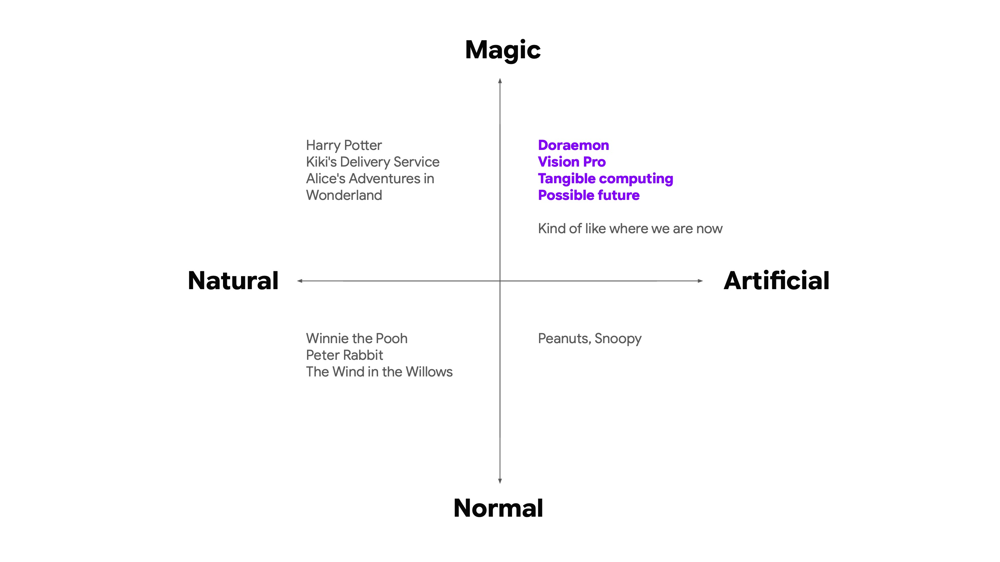
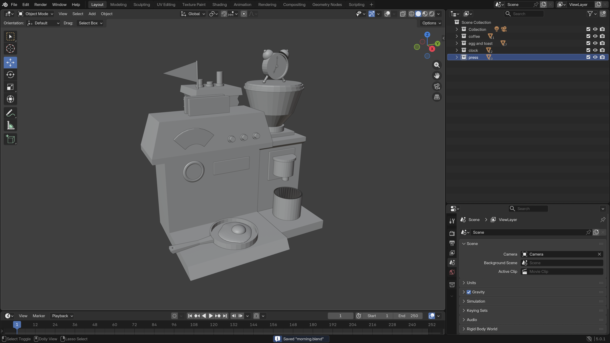

Compared with heavier social topics such as hierarchy or abundance versus scarcity, I wanted to work on something lighter and more enjoyable, something related to magic, fairy tales, and storytelling. Since we have tools like Blender that allow us to create almost anything, I developed this diagram and used references from novels, cartoon, and products to illustrate the possible worlds represented by each quadrant.
I chose to model the future represented by the first quadrant. In this world, technology works like magic. Here, “magic” does not refer to wizardry, but to delightful, unbelievable devices or advanced technologies that make everyday experiences feel magical. In other words, the magic in this future is magic for muggles, not for wizards. Given the current pace of technology development, this is a plausible future.
Inspired by Doraemon and the coffee machine built by a chemistry nerd in Breaking Bad, I designed a breakfast machine that can fry eggs, toast bread, and make coffee at the same time. It has a slightly steampunk aesthetic while remaining very domestic, full of the vitality and energy of the morning.

documentation_modeling

documentation_modeling

documentation_adding materials

documentation_motion test
video_morning machine